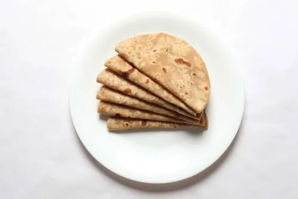

Chapati

How to make the tastiest chapati you've ever tasted
Ingridients
- 2 1/2 cup whole wheat flour
- water as required
- 1 tablespoon ghee
- a pinch of salt
Steps
- Knead a smooth dough
To begin with, take a large-sized bowl. Put two cups of flour along with a cup of water, salt and ghee in it. Mix well and start kneading a dough. Make sure that the dough is not too thick nor too thin. It has to be of a soft and pliable consistency. Add water to get the consistency right. Keep kneading for a while.
- Flatten the dough balls
Now roll out few balls from the prepared dough. Place them on a flat surface, flatten them further with the help of a rolling pin. Keep using the flour in order to prevent the rolls from sticking to the surface. Once the chapatis get the perfect round shape, place a pan on medium flame.
- Cook the chapati
Once heated enough, put the chapati on the pan and cook from both sides. Use a pair of tongs to flip over to the other side. Keep the flame to medium as too much heat might burn the chapati. Check for the little brown spots. Once they start appearing, the chapati will start to puff, indicating that it's completely cooked. Once done, transfer in a kitchen towel to keep them warm. Serve along any gravy or curry of your choice.
- Note
If you are someone who loves the richness of Ghee, then you can add some ghee while kneading the dough and with a pinch of salt this adds a nice aroma and taste to the Chapatis.